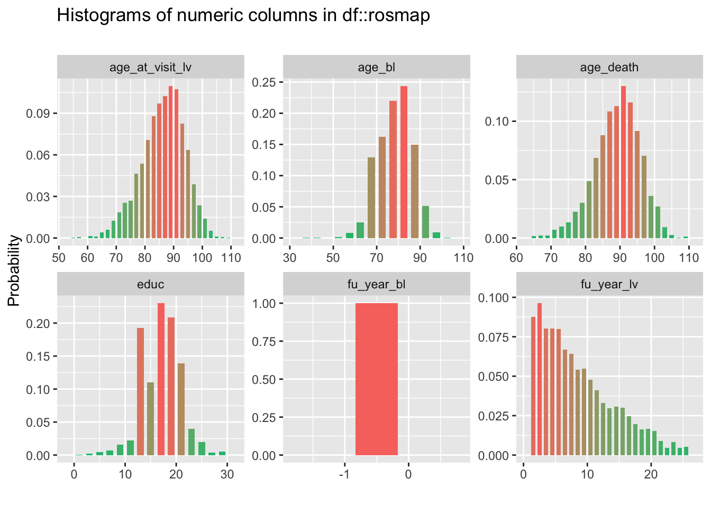
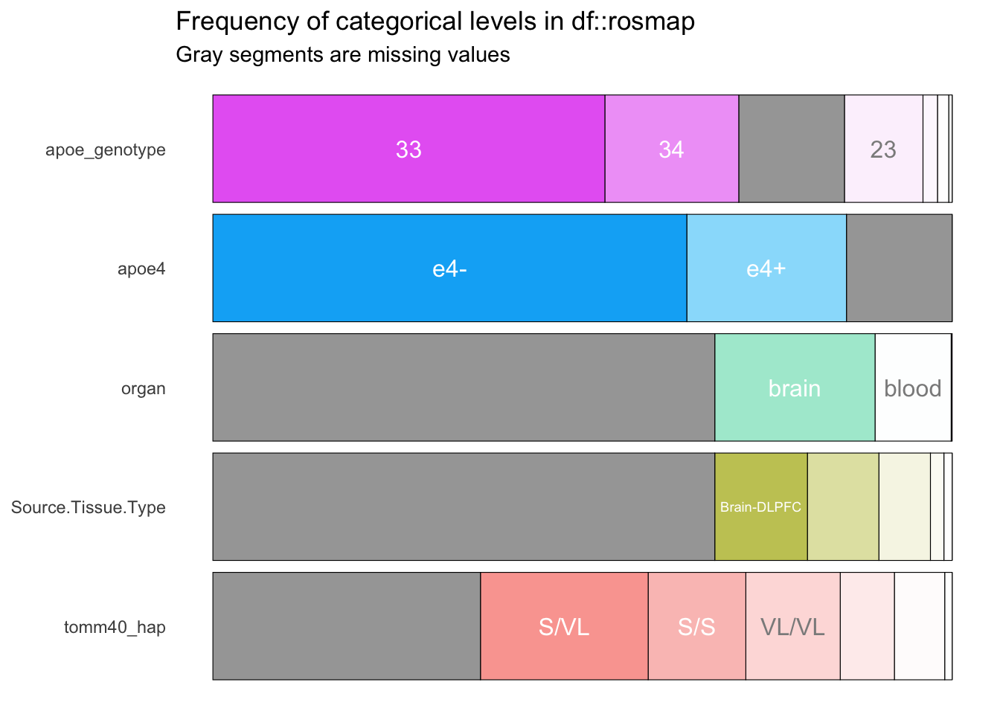
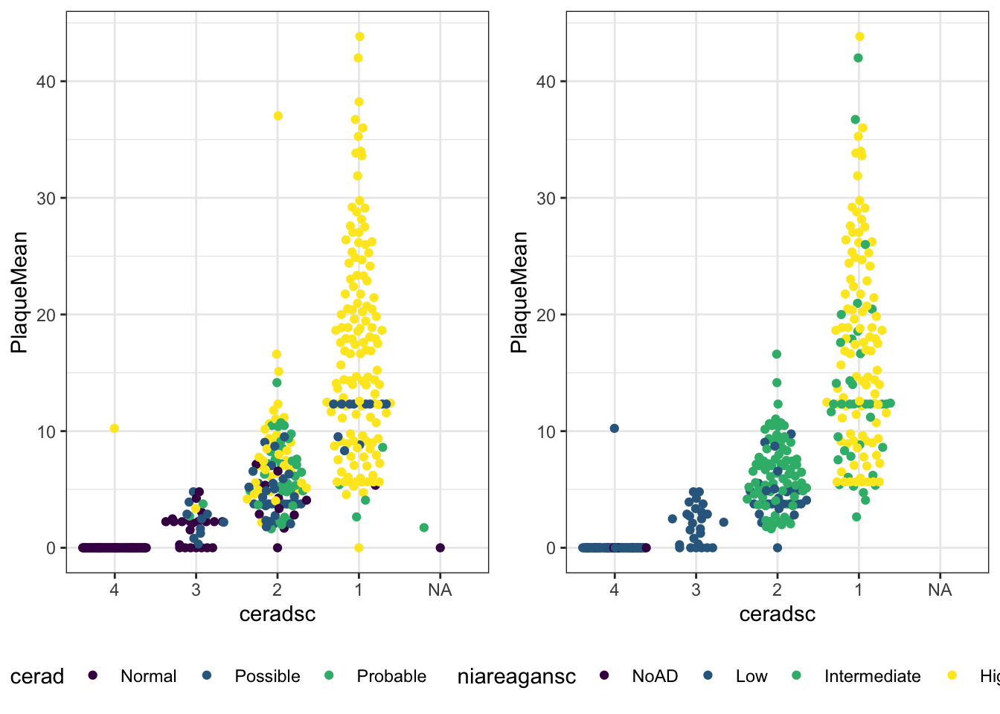
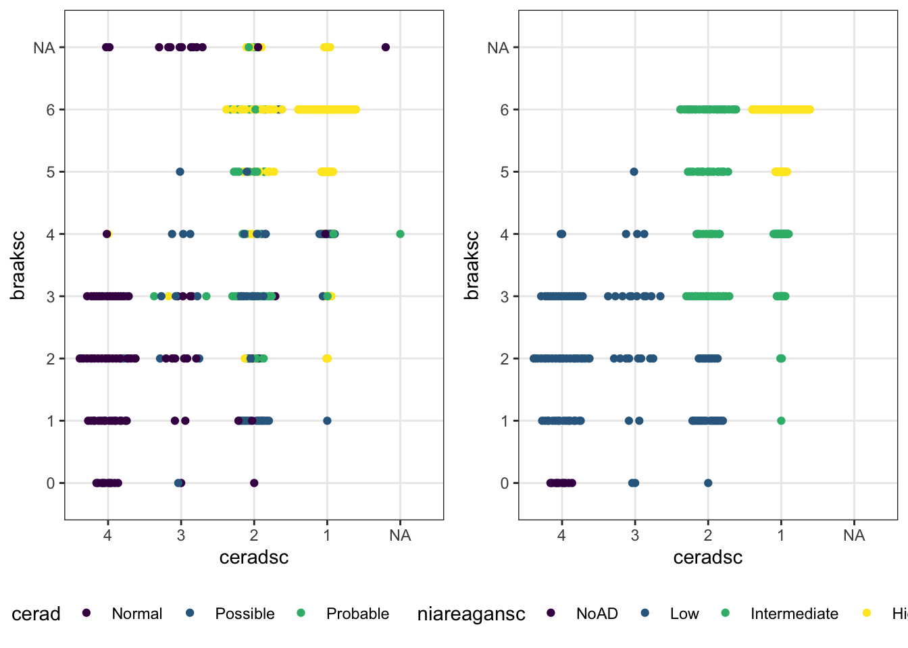
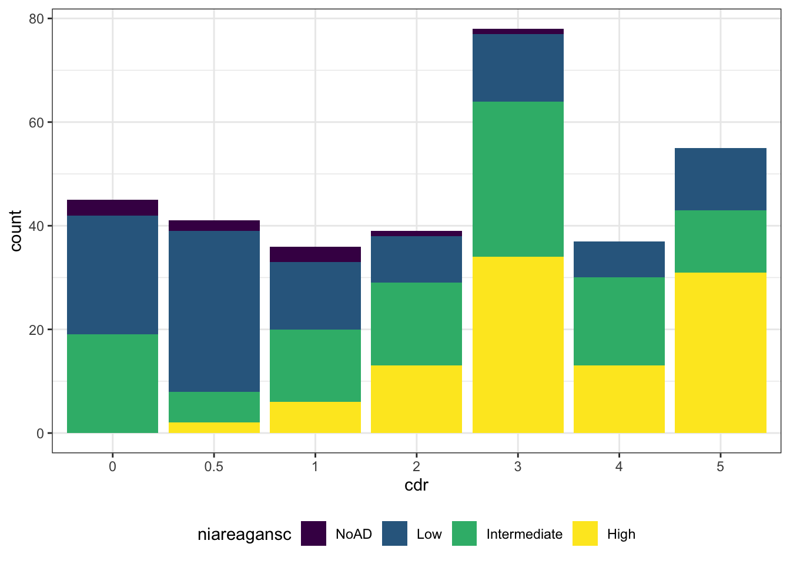
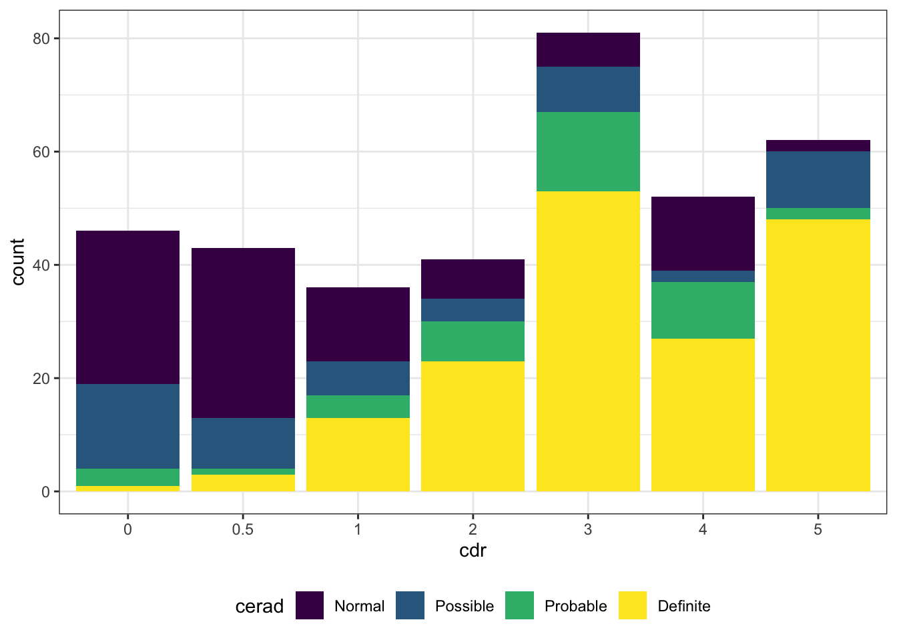
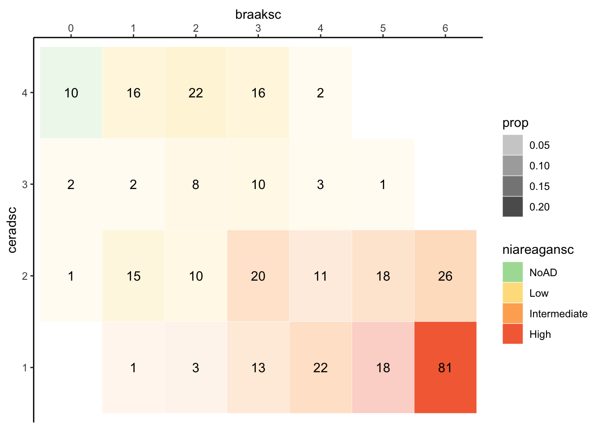

4.1 Pathology
Amyloid
HippoPlaquesWCoresValue,EntorPlaquesWCoresValue,MidPlaquesWCoresValue,SupPlaquesWCoresValue,InfPlaquesWCoresValue,OcciPlaquesWCoresValue: Neuritic plaque burden measured in 8 brain regions. (0 = Absent; 1 = Sparese; 3 = Moderate; 5 = Frequent)- requested from Haroutunian, Vahram on March 4 2020
ceradsc: semiquantitative estimates of neuritic plaque density modified to be implemented without adjustment for age and clinical diagnosis, as implemented in ROSMAP- score is derived from the brain region with the greatest number of neuritic plaques
PlaqueMean: Average number of plaques across brain regions
Nurofibilary Tangles
braaksc: Braak Stage is a semiquantitative measure of severity of neurofibrillary tangle (NFT) pathology
Neuropathological Diagnosis
cerad/NP.1: Neuropathology Category as measured by CERAD (1=Normal, 2=Definite AD, 3=probable AD, 4=possible AD)niareagansc: modified NIA-Reagan diagnosis of Alzheimer’s disease is based on consensus recommendations for postmortem diagnosis of Alzheimer’s disease. The criteria rely on both neurofibrillary tangles (Braak) and neuritic plaques (CERAD) and does not account for clinical information.- 1 = High; 2 = Intermediate; 3 = Low; 4 = No AD
- Implemented to match coding from
ROSMAP.
ad_reagan: dichotomized NIA-Reagan diagnosis
| col_name | min | q1 | median | mean | q3 | max | sd | pcnt_na |
|---|---|---|---|---|---|---|---|---|
| PlaqueMean | 0 | 1.68 | 6.51 | 9.01 | 13.2 | 43.84 | 9.21 | 0 |

## Note: Using an external vector in selections is ambiguous.
## ℹ Use `all_of(msbb_path_vars)` instead of `msbb_path_vars` to silence this message.
## ℹ See <https://tidyselect.r-lib.org/reference/faq-external-vector.html>.
## This message is displayed once per session.
4.1.1 Cross-tabs
| Characteristic | braaksc | Total | |||||||
|---|---|---|---|---|---|---|---|---|---|
| 0 | 1 | 2 | 3 | 4 | 5 | 6 | Unknown | ||
| ceradsc | |||||||||
| 4 | 10 (3.0%) | 16 (4.7%) | 22 (6.5%) | 16 (4.7%) | 2 (0.6%) | 0 (0%) | 0 (0%) | 2 (0.6%) | 68 (20%) |
| 3 | 2 (0.6%) | 2 (0.6%) | 8 (2.4%) | 10 (3.0%) | 3 (0.9%) | 1 (0.3%) | 0 (0%) | 3 (0.9%) | 29 (8.6%) |
| 2 | 1 (0.3%) | 9 (2.7%) | 10 (3.0%) | 20 (5.9%) | 11 (3.3%) | 18 (5.3%) | 26 (7.7%) | 8 (2.4%) | 103 (31%) |
| 1 | 0 (0%) | 1 (0.3%) | 3 (0.9%) | 13 (3.9%) | 16 (4.7%) | 18 (5.3%) | 75 (22%) | 9 (2.7%) | 135 (40%) |
| Unknown | 0 (0%) | 0 (0%) | 0 (0%) | 0 (0%) | 1 (0.3%) | 0 (0%) | 0 (0%) | 1 (0.3%) | 2 (0.6%) |
| Total | 13 (3.9%) | 28 (8.3%) | 43 (13%) | 59 (18%) | 33 (9.8%) | 37 (11%) | 101 (30%) | 23 (6.8%) | 337 (100%) |
| Characteristic | niareagansc | Total | ||||
|---|---|---|---|---|---|---|
| NoAD | Low | Intermediate | High | Unknown | ||
| cerad | ||||||
| Normal | 10 (3.0%) | 72 (21%) | 3 (0.9%) | 0 (0%) | 7 (2.1%) | 92 (27%) |
| Possible | 0 (0%) | 20 (5.9%) | 22 (6.5%) | 0 (0%) | 0 (0%) | 42 (12%) |
| Probable | 0 (0%) | 6 (1.8%) | 31 (9.2%) | 0 (0%) | 4 (1.2%) | 41 (12%) |
| Definite | 0 (0%) | 4 (1.2%) | 52 (15%) | 93 (28%) | 13 (3.9%) | 162 (48%) |
| Total | 10 (3.0%) | 102 (30%) | 108 (32%) | 93 (28%) | 24 (7.1%) | 337 (100%) |
4.1.2 Plots

Figure 4.1: Distribution of amyloid by neuropathological diagnosis

Figure 4.2: Distribution of neuropathological diagnosis by ceradsc and braaksc

Figure 4.3: CDR by diagnosis

Figure 4.4: CDR by diagnosis

Figure 4.5: Cross-tabs of cerad & braaksc